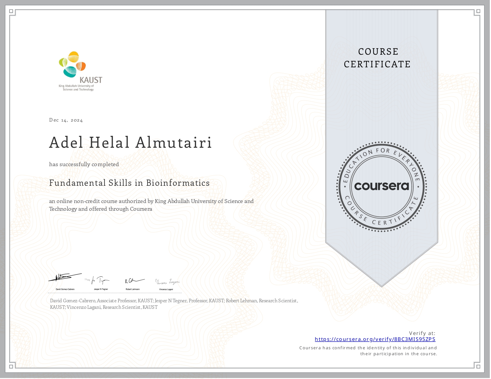
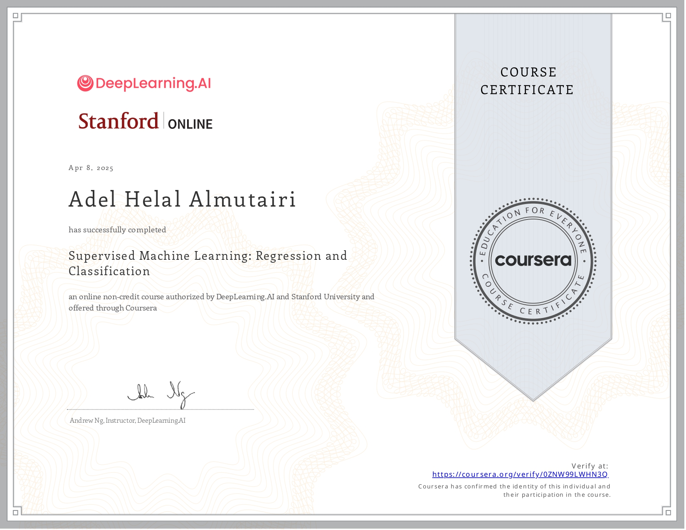
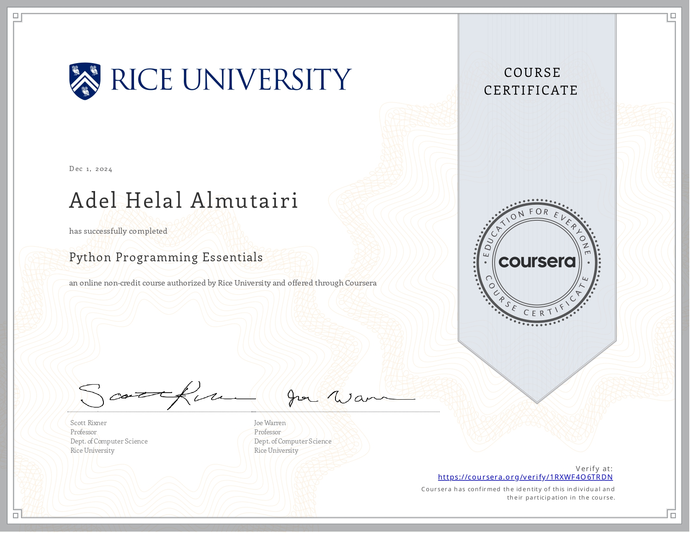
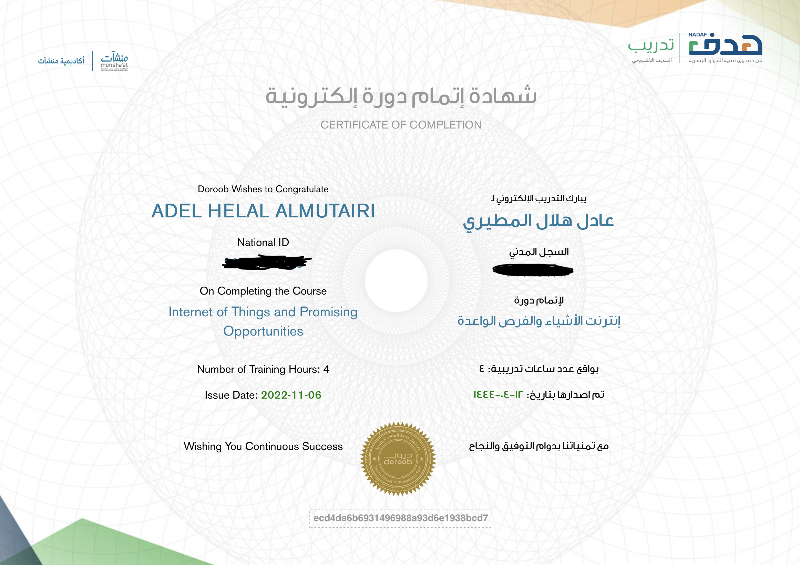

CERTIFICATES
Academic and professional credentials
Continuous learning and professional development





Welcome to my portfolio page.
Advanced bioinformatics solutions for genomic research and clinical applications
Assembly, alignment, annotation, variant calling, and population genetics for whole-exome and whole-genome sequencing projects.
SNP analysis, tree construction, and comparative evolutionary studies to trace pathogen origins and relationships.
Community profiling, functional analysis, and taxonomic classification for environmental and clinical samples.
Statistical modeling, machine learning, visualization, and narrative reporting using Python, R, and HPC systems.
Leading genomic analysis and research collaborations
Designing and maintaining computational pipelines to process and analyze biological data.
Leading genomic analysis for food safety and public health initiatives. Conducting outbreak investigations, pathogen characterization, and surveillance monitoring using advanced bioinformatics workflows.
Provided bioinformatics support for MSc theses, focusing on bacterial genome analyses and antimicrobial resistance gene detection.
Developed a computational workflow to predict and trace evolutionary relationships of transmembrane proteins in NCLDVs, utilizing AlphaFold to reduce experimental costs and accelerate research.
Innovative solutions in genomics and computational biology
Developed a multi-task deep learning model for predicting Transmembrane proteins and Signal Peptide, combining advanced neural architectures for protein structure prediction.
Cick here to view the demoIdentified plastic-degrading and biofilm-forming bacteria in soil metagenomes for environmental applications.
MAY 2025Benchmarked SNP-matrix phylogeny versus core genome MSA for Salmonella enterica isolates to improve epidemiological accuracy.
JANUARY 2025Assembly, annotation, and comprehensive analysis for multiple thesis projects across leading Saudi research institutions.
DECEMBER 2024Applied comparative genomics to trace contamination sources in a food poisoning outbreak linked to Clostridium species.
NOVEMBER 2024MSc research detecting transmembrane proteins in NCLDVs and exploring their evolutionary relationships using advanced computational methods.
MSC PROJECTContinuous learning and professional development




Available for opportunities in bioinformatics and genomic research
Riyadh, Saudi Arabia